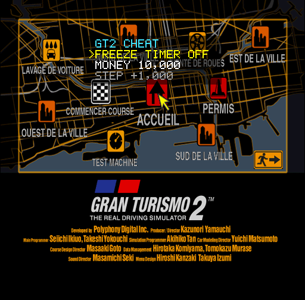
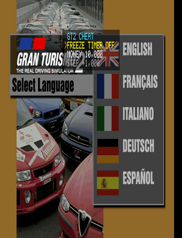
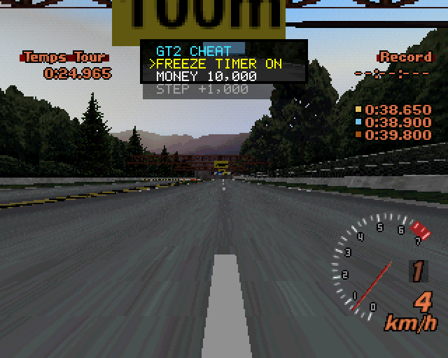
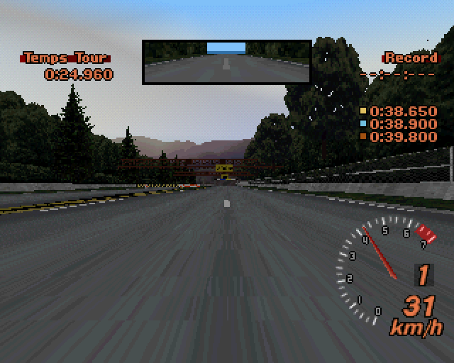

Pour la version européenne du jeu (PAL), disque Simulation (disque 2, SCES-12380, « Gran Turismo Mode »), le disque combiné (GT2-Combined-Disc) ou GT2 Plus de pez2k. Maintiens SELECT (ou appuie L1 + R1 + L2 + R2) et un petit menu apparaît par-dessus le jeu : figer le chrono des permis et changer tes crédits en direct. Cette page l'ajoute à ton image disque (.chd ou .bin), dans ton navigateur : rien n'est envoyé sur internet, et aucun fichier du jeu n'est fourni ici.
Deux disques ? Choisis le disque 2 (Simulation, « Gran Turismo Mode ») : le disque Arcade n'a ni mode GT ni permis. Un .cue + .bin ? Choisis le .bin. Un disque déjà modifié ailleurs (la MX-5 RF…) marche aussi : seuls SCES_123.80 et GT2.OVL changent, et chaque mot est vérifié avant.
Active au moins un interrupteur.
Quelques minutes : c'est ton navigateur qui fait tout le travail. La nouvelle image disque (~700 Mo) est écrite au fur et à mesure : dans Chrome et Edge tu choisis d'abord où l'enregistrer ; ailleurs elle est gardée dans le stockage du site jusqu'au téléchargement. Laisse l'onglet ouvert pendant ce temps. Ton image d'origine n'est pas modifiée.
.bin et le .cue dans le même dossier et ouvre le .cue dans ton émulateur (DuckStation, RetroArch, Batocera…).| Touche | FREEZE TIMER | MONEY |
|---|---|---|
| ↑ / ↓ | change de ligne | change de ligne |
| ← / → | ON / OFF | − / + le pas (maintenu : répétition) |
| ✕ / ○ | ON / OFF | |
| R1 / L1 | pas × 10 / ÷ 10 | |
| △ / □ | 99 999 999 / 0 |
FREEZE TIMER ON : dans un permis, le chrono s'arrête ; activé avant le départ, il s'arrête à 0:00.040. Arrête-toi dans la zone et l'or est à toi. Un appui bref sur SELECT reste transmis au jeu.



.ppf ou .xdelta pour le .bin du disque Simulation d'origine : dans la dernière version.python patch_disc.py "Gran Turismo 2.chd", voir le README.